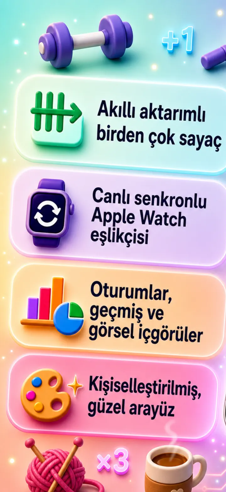
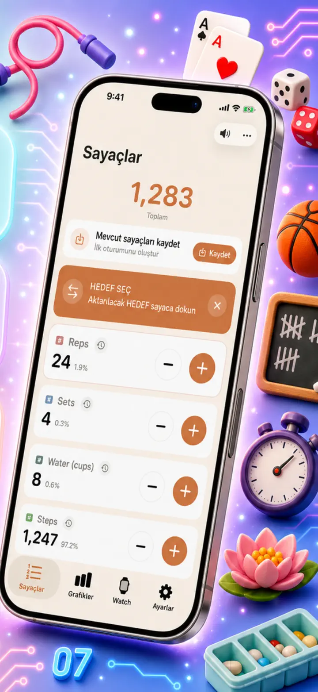
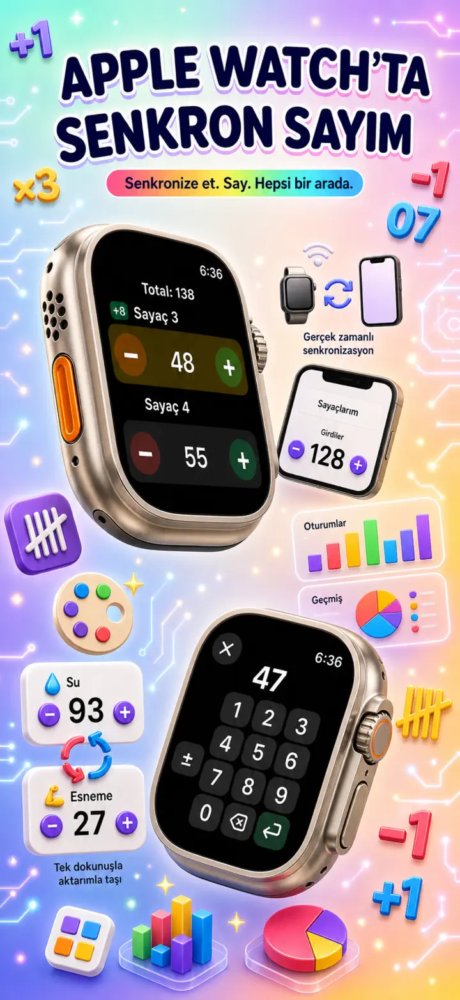
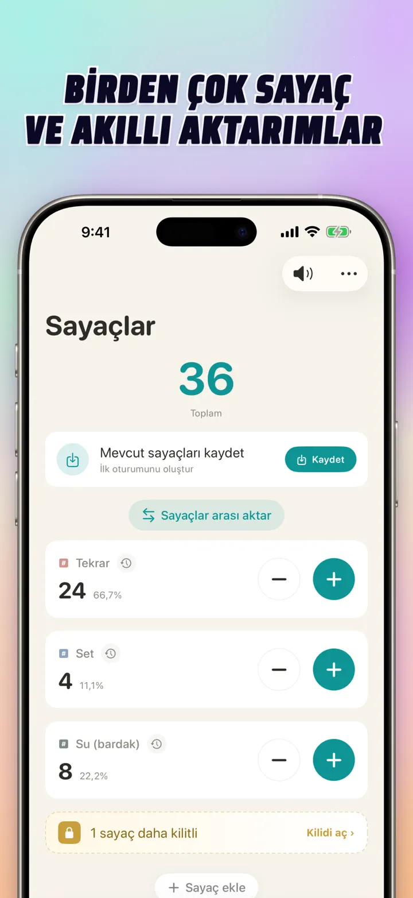
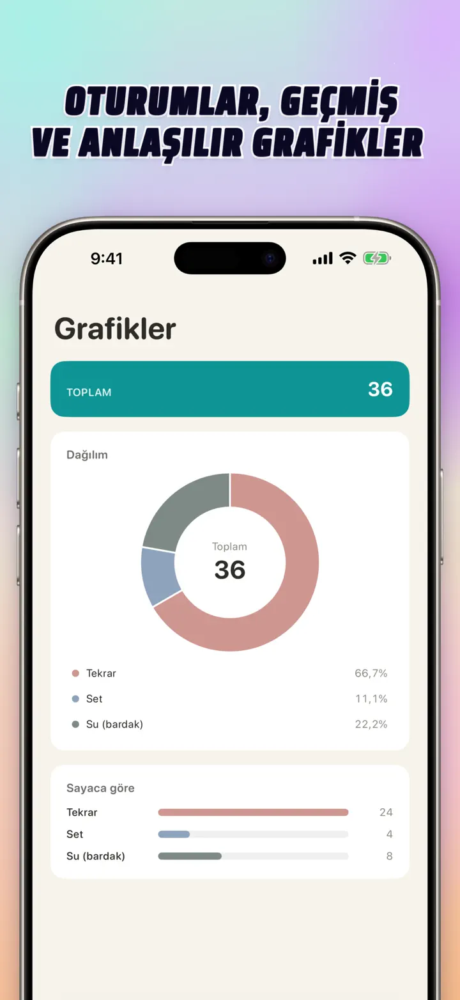
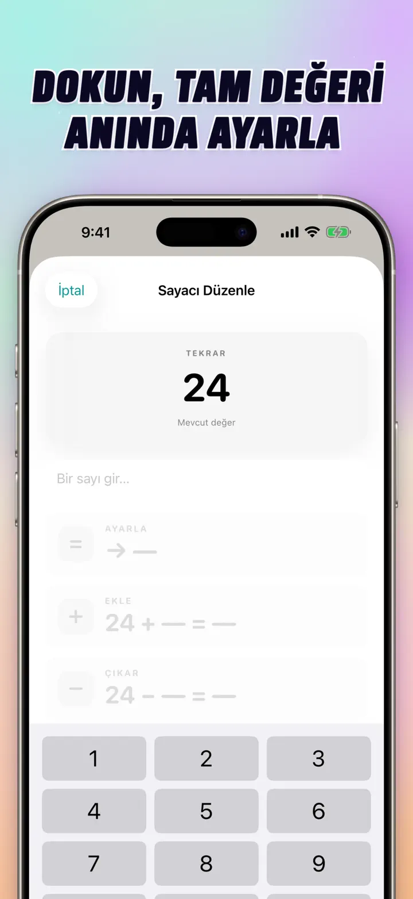
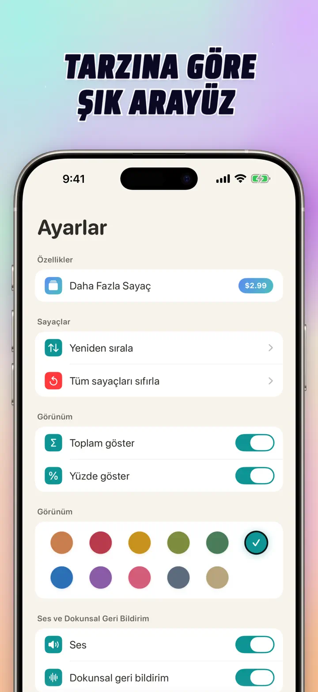
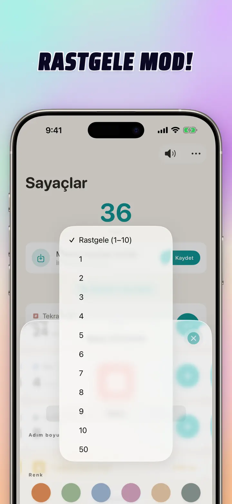

Sayaç 123
Watch sync, tıkla, skor
Yeni: Ana Ekran widget'ları — uygulamayı açmadan widget'ta +/- dokun. Sayaç ve tıklayıcı, Apple Watch sync, rastgele mod, grafikler ve geçmiş.
App Store’dan indir
Uygulama hakkında
Sayaç 123; iPhone, iPad ve Apple Watch için hızlı ve esnek sayaç uygulamasıdır. Sayaçlara isim ver, renk seç ve her şeyi say — spor salonu setleri, örgü sıraları, tespih, sınıf puanları, stok, maç skoru. Tüm veriler cihazda yerel kalır, çevrimdışı çalışır.
ÖZEL SAYAÇLAR
- Etkinlikler, oyunlar, rutinler veya listeler için ayrı sayaçlar oluştur
- Her sayaca özel isim ve renk
- Sıralamak için sürükle
- Hızlı ardışık sayım için basılı tut
- Tamamen çevrimdışı — kayıt yok, bulut yok
DOĞRUDAN GİRİŞ VE TOPLU İŞLEMLER
- Sayaca dokun, başlangıç değerini doğrudan ayarla — sıfırlamaya gerek yok
- Toplu +/-: sayacı herhangi bir sayıyla tek dokunuşta değiştir
- Aktarım: bir sayaçtan diğerine değer aktar, iki ayrı işlem yok
- Özel adım: tek dokunuş 1, 5, 10, 100 veya istediğin sayıyı ekler
- Her değişimin canlı önizlemesi
RASTGELE MOD
- Sayaç her dokunuşta 1 ile 10 arasında yeni bir değer seçsin
- + ve - düğmeleriyle rastgele değer ekle veya çıkar
- Egzersizler, oyunlar, ödüller, sınıf etkinlikleri ve rutinler için kullanışlı
- Her rastgele dokunuş sayacın geçmişine kaydedilir
TOPLAMLAR VE GRAFİKLER
- Tüm sayaçların toplamı tek bakışta
- Yüzde görünümü: her sayacın toplama katkısı
- Etkileşimli çubuk grafik — değer (#) ile yüzde (%) arasında geçiş
- Değere göre sıralama ile anlık liste
GEÇMİŞ VE PAYLAŞIM
- Tam geçmiş: her ekleme, çıkarma ve düzenleme kaydedilir
- Sayaç setlerini kaydet ve istediğin an yeniden yükle
- Yapılandırmaları ekip, öğrenciler veya arkadaşlarla paylaş
APPLE WATCH İLE CANLI SYNC
- iPhone veya Apple Watch’ta değiştir; iki cihaz da senkron kalır
- Gerçek yerel watchOS uygulaması — basit bir eşlik uygulaması değil
- İsimler, renkler ve değerler bileğinde senkronize
- Saymak için dokun, tekrar için basılı tut — doğrudan saatten
- iPhone yakın olmasa bile tek başına çalışır
iPhone, iPad VE APPLE WATCH İÇİN
- Her ekran boyutuna uyumlu düzenler
- iPad aynı anda daha fazla sayaç gösterir, Split View destekli
- Önce gizlilik: yerel depolama, bulut yok, hesap yok
ŞUNLAR İÇİN İDEAL
- Spor salonunda setler ve tekrarlar
- Örgü sıraları ve tığ ilmekleri
- Tespih, zikir, dua tesbihleri
- Sınıf puanları ve yoklama
- Hentbol, voleybol, basketbol — hızlı skor
- Masa tenisi
- Stok ve depo sayımı
- Masa oyunları, kâğıt oyunları, okey, tavla
- Havuz ve pist turları
- Kuş gözlemi
- Etkinliklerde katılımcı sayımı
- Alışkanlık ve hedef takibi
Sayaç 123'yi indir ve her sayımı kolaylaştır — net, hızlı, özel.
Gizlilik Politikası: https://masawata.net/privacy-policy.html Kullanım Koşulları: https://www.apple.com/legal/internet-services/itunes/dev/stdeula/
Ekran görüntüleri







Sayaç 123
Yeni: Ana Ekran widget'ları — uygulamayı açmadan widget'ta +/- dokun. Sayaç ve tıklayıcı, Apple Watch sync, rastgele mod, grafikler ve geçmiş.
App Store’dan indir